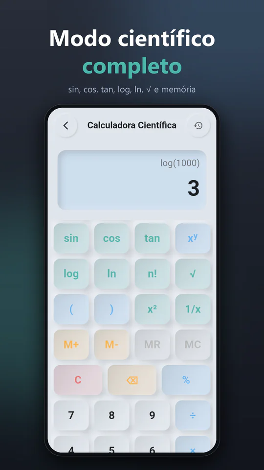
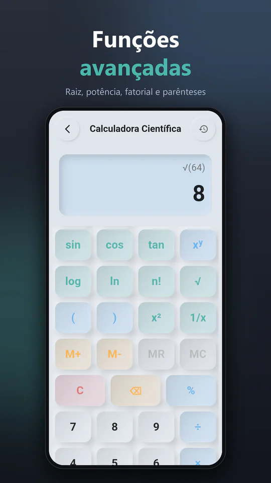
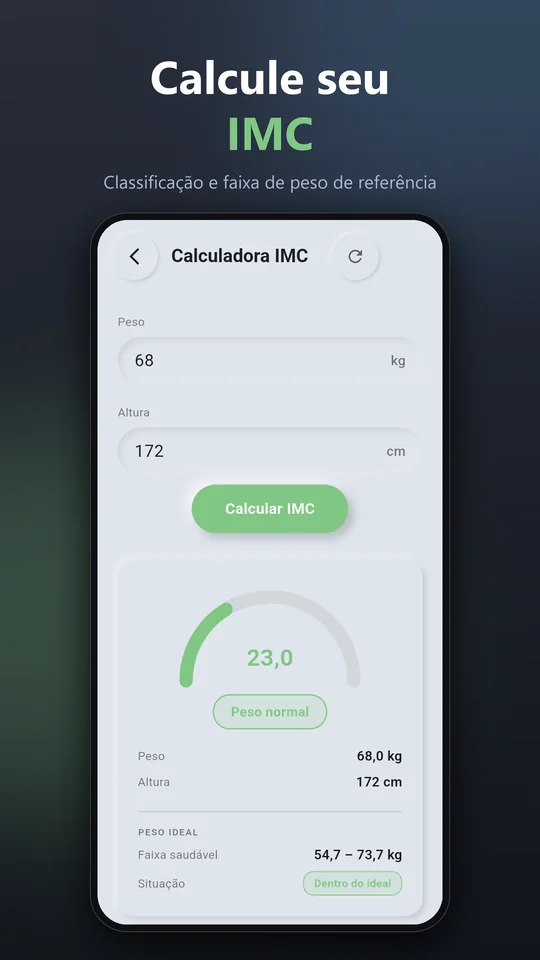
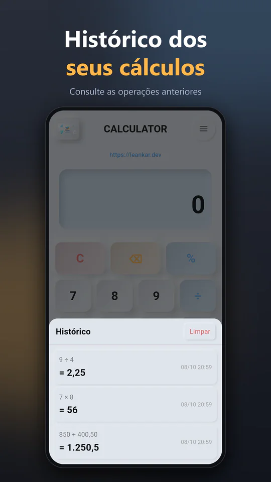
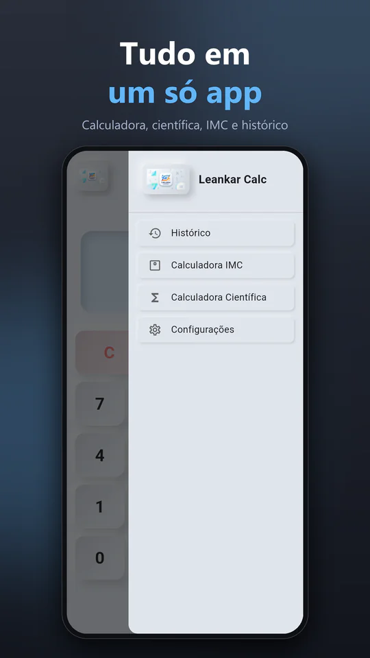

Por que usar
-
Do básico ao científico
Alterne entre a calculadora básica e a científica, com parênteses, trigonometria, logaritmos e memória.
-
IMC com faixa saudável
Informe peso e altura e veja a classificação da OMS e a faixa de peso saudável para a sua altura.
-
Histórico à mão
Os últimos 50 cálculos ficam salvos no aparelho; consulte ou apague quando quiser.
Telas do app





Veja em ação
Funcionalidades
- Quatro operações básicas: soma, subtração, multiplicação e divisão
- Cálculo de porcentagem integrado
- Modo científico: trigonometria, logaritmos, potências, raízes, fatorial, memória e graus/radianos
- Calculadora de IMC com classificação OMS (6 faixas)
- Histórico persistente dos últimos 50 cálculos
- Temas claro, escuro e automático (segue o sistema Android)
- Design Neumórfico com alto contraste e tipografia legível
- 5 idiomas: português, inglês, espanhol, francês e italiano
- Funciona sem internet; anúncios opcionais, que você aceita ou recusa
Sobre o aplicativo
A Calculadora Leankar nasceu da insatisfação com calculadoras sobrecarregadas de anúncios e funções que ninguém usa. O objetivo foi construir algo simples, funcional e esteticamente honesto: uma ferramenta que ocupa o mínimo de espaço, funciona sem internet e entrega o resultado sem distrações.
O design segue a linguagem neumórfica — elementos que parecem levemente pressionados na superfície, com sombras suaves e bordas arredondadas. Cada botão foi dimensionado com área de toque generosa para facilitar o uso em situações onde a atenção está dividida: cozinhando, fazendo compras ou convertendo valores em movimento.
Além do modo básico, a calculadora científica entende expressões completas, com parênteses e a ordem correta das operações. Ela traz seno, cosseno e tangente (e suas inversas pela tecla SHIFT), logaritmo e logaritmo natural, potências, raízes quadrada e cúbica, fatorial, permutação, valor absoluto, 1/x, π e o número de Euler, além de memória (M+, M−, MR, MC) e alternância entre graus e radianos. Erros como divisão por zero ou parênteses sem fechar são avisados na tela.
O histórico persistente é implementado com SharedPreferences: os últimos 50 cálculos são salvos automaticamente entre sessões, sem sincronização em nuvem e sem conta. O histórico fica só no aparelho e não é enviado a nenhum servidor. Ao fechar e reabrir o app, o histórico está intacto.
A função de IMC calcula o Índice de Massa Corporal a partir de altura e peso, exibe o resultado numérico e enquadra nas 6 faixas da tabela da OMS — de "abaixo do peso" a "obesidade grau III". Uma feature prática para quem acompanha saúde sem querer instalar um app específico só para isso.
Desenvolvida com Flutter 3 e Material Design 3. O app não pede nenhuma permissão que precise da sua autorização, como câmera, localização ou contatos. Na versão Android, exibe um banner de anúncios (Unity LevelPlay) somente se você aceitar: nesse caso, o SDK de anúncios pode coletar dados do aparelho, como o ID de publicidade. Detalhes na política de privacidade do app.
Requisitos e compatibilidade
- Plataforma
- Android
- Android mínimo
- Android 7.0 ou superior
- Idiomas
- Português, inglês, espanhol, francês e italiano
- Preço
- Gratuito, sem compras dentro do app
- Anúncios
- Sim: banner, só na versão Android. Só aparece se você aceitar, e você pode mudar nas configurações.
- Conexão
- Funciona sem internet; só os anúncios usam conexão
- Permissões
- Acesso à internet, estado da rede e ID de publicidade, usados pelos anúncios. Nenhum pede a sua autorização.
- Política de privacidade
- Ver política do app
Perguntas frequentes
-
Sim, é gratuito. Não há compras dentro do app, assinatura ou versão premium, e todas as funcionalidades estão disponíveis desde o primeiro uso. O app é mantido por um banner de anúncios na versão Android, que você aceita ou recusa.
-
Sim. Os cálculos, o histórico e o IMC funcionam sem internet, inclusive em modo avião. A única parte que usa conexão é o banner de anúncios da versão Android, e só se você aceitar os anúncios.
-
Sim. Na tela de histórico há um botão para limpar todos os registros de uma só vez. O histórico também é apagado ao limpar os dados do app nas configurações do Android.
-
Atualmente apenas para Android. A publicação na Apple App Store está nos planos, mas ainda sem data definida. Não há versão web por enquanto.
-
O histórico de cálculos fica exclusivamente no armazenamento local do seu dispositivo e não é enviado a nenhum servidor; o app não tem conta nem cadastro. Se você aceitar os anúncios (somente na versão Android), o SDK Unity LevelPlay pode coletar dados do aparelho, como o ID de publicidade e o endereço IP, para exibi-los. Se recusar, o SDK nem é iniciado. Os detalhes estão na política de privacidade do app.
-
Informe peso (em kg) e altura (em metros ou centímetros). O app aplica a fórmula padrão da OMS — IMC = peso / altura² — e exibe o resultado com a classificação correspondente: abaixo do peso, peso normal, sobrepeso, obesidade grau I, II ou III.
-
Sim. No menu do app há a Calculadora Científica, com trigonometria (e funções inversas pela tecla SHIFT), logaritmos, potências, raízes, fatorial, permutação, π, e, parênteses, memória (M+, M−, MR, MC) e alternância entre graus (DEG) e radianos (RAD).
Disponível gratuitamente no Google Play. Sem cadastro, com anúncios opcionais, sem surpresas.
Baixar no Google Play